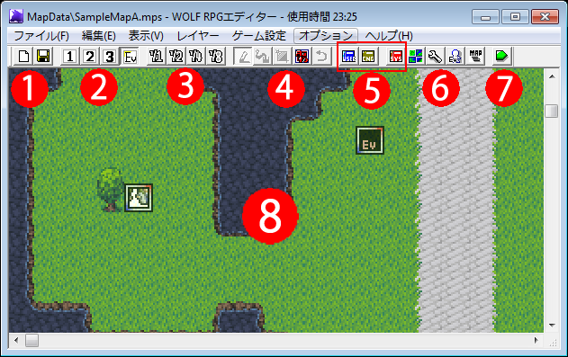
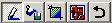
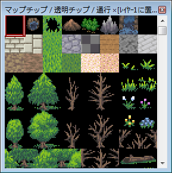

【メインウィンドウ】

【操作方法】
・②の「レイヤー1～3」選択時
左クリック … 指定したマスにチップを描く
右クリック … スポイト（コピー）機能。ドラッグすると範囲内のチップ配置をコピーできる。
Ctrl+右クリック … まとめコピー機能。ドラッグすると、範囲内のレイヤー1～3全てのチップ配置を取得できる。
Ctrl+左クリック … まとめ貼り付け機能。Ctrl＋右クリック時に取得したレイヤー1～3全てのチップ配置を貼り付ける。
Shift+左クリック … オートタイル機能（例：水辺を繋げて表示させる処理）を無効にしてチップを描く。
Ctrl+Z … マップ編集の「一つ戻る」を行います。
・②の「イベントレイヤー(Ev)」選択時
左クリック … イベント選択
左ダブルクリック … イベント作成/編集
右クリック … サブメニュー表示
・②の「レイヤー1～3,イベントレイヤー(Ev)」共通
中ボタンをドラッグ、SPACE+マウス移動 … マップ画面をスクロール
Ctrl+Shift+カーソルキー(上下左右) … 全レイヤーのチップ・イベント配置をシフト
・ショートカットキー
1～4：レイヤー変更 （1～3＝レイヤー1～3 ・ 4＝イベントレイヤー）
Ctrl+S：マップ上書き保存
X：イベント切り取り
C：イベントコピー
V：イベント貼り付け
Del or BS：削除
【各部の説明】
１：マップの新規作成・保存ボタンです
２：マップエディットのレイヤー選択（1～3）ボタンと、イベントエディット（Ev）ボタンです。エディットしたい対象に切り替えてください。レイヤー選択ボタンを押すとマップチップウィンドウが表示されます。
３：それぞれ、マップの縮尺を1/1～1/8にします。全体を見渡したいときなどに使います。
４：マップ作成時に使える描画ツールです、左から順に「鉛筆ツール」「塗りつぶしツール」「四角描画ツール」「マップ自動生成ツール」「一つ戻る」のボタンを表します。
５：各種データベースを開くボタンです。左から、青＝ユーザデータベース、黄＝可変データベース、赤＝システムデータベースを表します。
６：マップに関する特殊ツールです。左からそれぞれ「タイルセット設定」「マップの基本設定」「コモンイベントの設定」「マップ選択」ツールを表します。
７：テストプレイを開始します。テストプレイ時にはF8キーによる読み込みファイル・使用ピクチャの確認とF9キーによる変数確認が可能です。
８：マップエディット部です、ここに絵を描くようにチップを配置することでマップを作成することができます。
【マップチップウィンドウ】
・1～3どれでも、「レイヤー選択ボタン」を押すと自動的に表示されます。
左クリックで使用するチップを選択し、メインウィンドウのマップに書き込んでください。このとき、ドラッグすることで複数マスのチップをまとめて選択することができます。単体チップを選択すると、チップ番号、チップのタグ番号、通行設定が表示されます。

【特殊な操作】
中ボタンをドラッグ … マップチップ選択画面をスクロールできます。